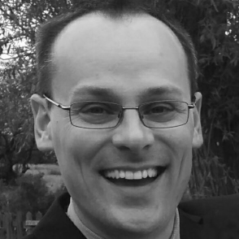

Biography of Richard Hughes

Richard is an open source developer who built a firmware update ecosystem. He has over 20 years of experience developing open source software.
He is the original creator and now maintainer of LVFS, fwupd, uSWID and libxmlb. Previously he also designed and built ODRS, GNOME Software, AppStream-glib, PackageKit, colord, and UPower and has also contributed to many other projects and opensource standards. Richard has three main areas of interest in Linux: firmware updating, color management, and power management.
Richard graduated in 2007 from the University of Surrey with a MEng (with distinction) in Electronics Engineering. He now works as a senior principle software engineer for Red Hat, and once also built a company selling open source calibration equipment. Richard's outside interests include taking photos, eating good food and looking after his two daughters.